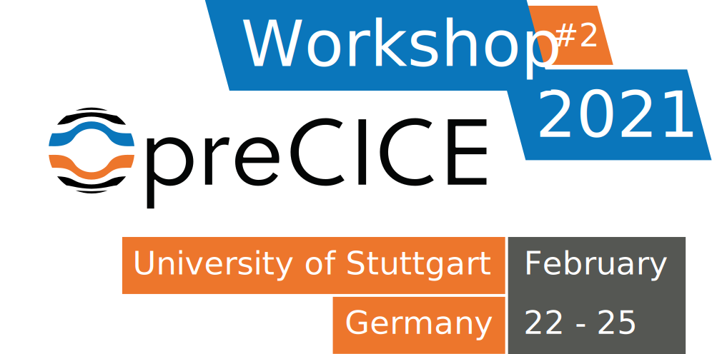
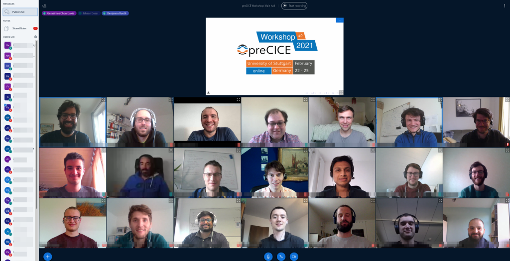

The 2nd preCICE Workshop was held virtually through the University of Stuttgart, between February 22-25, 2021. The workshop is a coming together of the preCICE community to share ideas, experiences and knowledge about using preCICE, and to learn from others in the process. Registration for the workshop is closed.
If you have any questions regarding the workshop, please contact us at precice2021@ipvs.uni-stuttgart.de.
Program
The workshop stretches from Monday noon to Thursday evening.
Monday, February 22
- 13:00 - 13:30 Welcoming (Main Hall)
- 13:30 - 14:00 Q&A session of the introductory video: Fundamentals of preCICE (Main Hall)
- 14:30 - 15:00 Break (Offline)
-
15:00 - 17:00 preCICE Course I (Main Hall)
preCICE Course I: Basics and Tools
Instructors: Gerasimos Chourdakis, Benjamin Uekermann
Affiliation: Technical University of Munich, University of Stuttgart, preCICE developers.A hands-on introduction to preCICE, recommended for new users that want to learn how to couple their own codes.
We will couple two simple Python codes, discussing the basic methods of the preCICE API and the structure of the configuration file. We will then also look into tools useful for developing and debugging coupled simulations.
We will need preCICE v2.2, Python 3.6 or newer, and the Python bindings. Optionally, please also install ParaView and gnuplot, or similar software to visualize VTK point data and CSV files. If you prefer to try everything in a Virtual Machine, you can use the Vagrant Box (VirtualBox image) precice/precice-vm.
See the "preCICE Course II" for more topics and additional technical requirements.
Tuesday, February 23
- 09:30 - 10:00 Morning synchronization (Main Hall)
-
10:00 - 13:30 User presentations (Main Hall)
See preCICE in action, in a variety of applications. Each talk will be an approx. 20min video premiere, followed by a live Q&A session. Click on each box for more details.Prasad Adhav: Evaluation of erosion inside AWJC Nozzle by 6‐way coupling of DEM+CFD+FEM using preCICE
Authors: Prasad Adhav, Xavier Besseron, Alban Rousset, Bernhard Peters
The objective of this work is to study the particle‐induced erosion within a nozzle for abrasive cutting. So far, the erosion in the nozzle was predicted only through the number of collisions, using only a simple DEM+CFD coupling. To improve these predictions, we extend our model to a 6‐way momentum coupling with DEM+CFD+FEM to account for deformations and vibrations in the nozzle.
Our prototype uses preCICE to couple 3 numerical solvers: XDEM (for the particle motion), OpenFOAM (for the water jet), and CalculiX (for the nozzle deformation). The OpenFOAM adapter has been adapted to add particles drag, which is modeled as semi‐implicit porosity, implicit and explicit drag terms injected to OpenFOAM solver through fvOptions.
This 6‐way coupling between DEM+CFD+FEM brings the simulation of the particle‐laden multiphase flow inside the abrasive cutting nozzle close to the real‐life conditions. Thus opening up opportunities for further investigation and improvement of the Nozzle design.
A. Enders‐Seidlitz: Development of a python‐based crystal growth simulation framework
Authors: A. Enders‐Seidlitz, J. Pal, K. Dadzis
The NEMOCRYS project in the group “Model experiments” at the IKZ develops an open‐source‐based framework for coupled multiphysics simulation in crystal growth. Currently, Gmsh for FEM mesh generation and Elmer to solve the heat transfer problem including inductive heating are applied. These tools are wrapped in an easy‐to‐use python interface that allows for highly‐ parameterized models and enables automated large‐scale studies. A major challenge in the present implementation is the coupling between Elmer and Gmsh: The transient simulation involves moving boundaries and requires mesh updates. In future, an additional coupling to OpenFOAM will be needed to consider the fluid dynamics of the liquid and gas phase. This requires transient bi‐directional multiscale coupling in 2D and 3D both on surfaces and in volumes. We consider preCICE a promising library to meet this challenge and would like to discuss the need for further adapters and coupling algorithms.
Ulrich Heck: Transfer of FSI coupling with preCICE, OpenFOAM and CalculiX to industrial applications‐Status and plans
Authors: Ulrich Heck, Martin Becker
The preCICE coupling provides an efficient and powerful tool for solving demanding fluid structure applications with OpenFOAM and CalculiX. Based on this, the needs for industrial users will be shown and solution approaches will be presented during the lecture. Besides a GUI solution for an efficient case setup, benchmarks for different problems and modelling approaches such as free surface flows or the use of shell elements on the structure side will be presented. Finally, current fields of work and requirements for future applications such as fluid structure solutions for filter applications or closing processes with dynamic wall contact will be shown.
Alexander Jaust: Solving coupled free and porous‐media flow with preCICE and DuMuX
Authors: Alexander Jaust, Miriam Mehl
We present recent results of coupling free and porous‐media flow applications and the development of the corresponding adapter. The main focus is on simulations based on DuMuX (https://dumux.org/) which is an open‐source framework for solving flow problems, especially porous‐media flow. We present results using the partitioned approach of preCICE for different scenarios and compare it, where applicable, with monolithic simulations or exact solutions.
Leonhard Odersky: Energy system optimization with preCICE
Authors: Leonhard Odersky, Smajil Halilovic
In order to be able to optimally design an urban energy system, many complex interactions must be taken into account. The project GeoKW is therefore investigating the optimal use of shallow geothermal heat pumps for energy supply of the city of Munich. This could create synergies in meeting the heating and cooling loads of the various infrastructures in the city. The optimization of this highly complex problem requires the coupling of the groundwater simulation software PFLOTRAN and the energy system optimization framework urbs. This coupling is realized with the help of preCICE. For a first exemplary application, the coupling is already implemented and shows promising results. In further work, the coupling is to be extended to the entire area of the city of Munich. Based on the first results, we would like to present the optimization problem with the optimization framework, the coupling approach and the use of preCICE in this framework at the upcoming workshop.
Viktoria Pauw: Using preCICE for GeoKW on Supermuc‐NG
Authors: Viktoria Pauw
We would like to contribute on our experience employing preCICE on Supermuc‐NG for the project GeoKW. The aim of the project is to improve the use of shallow geothermal energy by providing simulation data on optimal placement of facilities. When thermal interference is not assessed while planning the installation locations and usage of heat pumps, it can severely impact efficiency. For this problem, we use preCICE to couple urbs, a linear programming optimisation model for energy systems, with PFLOTRAN, a subsurface flow solver. preCICE allows fast implementation to couple these 2 codes for large distributed systems with minimal effort. All communication, mapping and acceleration schemes are already implemented. The open source nature and flexibility allows us to use preCICE extensively for our unique application. The coupled model will now be tested on the HPC systems at LRZ in Garching and we would welcome the opportunity to report the preliminary results at the upcoming workshop.
Andreas Stegmeir: Application of code coupling in magnetic fusion
Authors: Andreas Stegmeir, Ishaan Desai, Benjamin Ueckermann
Nuclear fusion technology is projected to play a major role as a source of clean and safe energy in the future. the process of converting complex physical theories to working engineering applications, modelling and simulation assumes a vital position. While simulating nuclear fusion devices, the physical and geometrical complexity arising from different scales and physical regimes needs to be addressed. In this talk opportunities of coupling methods for solving the multiphysics and multiscale problems of magnetic fusion will be presented. As a first application the coupling of a code simulating the core region of a tokamak with the code GRILLIX simulating turbulent transport in the edge region is considered. To perform this coupling, a partitioned black‐box approach is pursued using the open‐source coupling library preCICE. The main focus is on the geometrical complexities of the coupling arising due to the usage of different coordinates in both participants.
Satish Chimakurthi: A preCICE-Based Computational Multiphysics and Multiscale Modeling Framework for the Simulation of Laser Biological Tissue Interactions
Authors: Satish Chimakurthi, Michael Nucci, Steven Jacques, Rich London, Andrew Wharmby, and Eric Blades
Lasers have important applications in many areas, including biology, medicine, and military, and knowledge of laser-tissue interactions is vital for their proper and optimal use in these areas. Lasers can interact with biological tissue through various photochemical, photothermal, and photomechanical mechanisms involving basic physical phenomena such as light, heat, mass transport, and material changes such as thermal coagulation. While there are several comprehensive multiphysics codes that could be used to investigate these interactions, they are not developed primarily for biological systems and are often difficult to extend. This talk will introduce a preCICE-based multiphysics framework for laser-tissue interactions and emphasize the development of two new preCICE adapters: one for an open-source solver, mcxyz.c, that is used to simulate light transport in biological tissues, and another for an open-source but ITAR-controlled computational fluid dynamics solver, Loci/CHEM.
- 13:30 - 14:15 Break (Offline)
-
14:15 - 16:15 preCICE Course II (Main Hall)
preCICE Course II: Implicit coupling for Conjugate Heat Transfer
Instructors: Gerasimos Chourdakis, Benjamin Uekermann
Affiliation: Technical University of Munich, University of Stuttgart, preCICE developers.A hands-on introduction to implicit coupling details in preCICE, recommended for new users that want to learn how to make their coupled simulations more accurate and numerically efficient.
We will couple OpenFOAM and Nutils for Conjugate Heat Transfer, discussing the basic methods of the preCICE API and the structure of the configuration file. We will then also look into tools useful for developing and debugging coupled simulations.
We will need preCICE v2.2, Python 3.6 or newer, the Python bindings, Nutils 6, OpenFOAM (e.g. v2012), the latest OpenFOAM adapter, and ParaView. If you prefer to try everything in a Virtual Machine, you can use the Vagrant Box (VirtualBox image) precice/precice-vm.
If you are new to preCICE, see "preCICE Course I" first. If you already understand the basics of an adapter, you can directly start here.
- 16:20 - 17:20 Frédéric Simonis: What’s new in preCICE (Main Hall)
- 17:25 - 18:15 Networking/Social Event (Main Hall)
Get to know each other and discuss your work in more detail, or simply enjoy a relaxed atmosphere after the user presentation talks.
Wednesday, February 24
- 09:30 - 10:00 Morning synchronization (Main Hall)
-
10:00 - 11:30 Developer talks (Main Hall)
Learn about the latest developments or other important elements of preCICE. Similarly to the speaker presentations, the talks will be pre-recorded, followed by a live Q&A session. Click on each box for more details.Amin Totounferoush: Two Step Parallel Communication Initialization for preCICE
Authors: Amin Totounferoush, Benjamin Uekermann, Miriam Mehl
This talk provides an overview of the current initialization method in preCICE, and introduces the new two step initialization method. The two step initialization provides a significant performance increase.
Kyle Davis: Data Mapping in preCICE
Authors: Kyle Davis
This talk provides an overview of current mesh mapping methods in preCICE. A more detailed explanation of the radial basis function implementation is provided, along with some mesh mapping test results. Throughout the talk, best practice methods are suggested, and rounded off with future plans to enable easier mapping in preCICE.
Benjamin Uekermann: Macro-Micro Coupling with preCICE
Authors: Benjamin Uekermann
For many challenging applications in simulation technology, micro-scale phenomena can dominate macro-scale behavior. Using micro-scale models to simulate the complete macro-scale domain of interest is however oftentimes infeasible due to excessive computational cost. Thus, multiscale consideration is a necessity. In this presentation, we will outline how we want to extent preCICE to tackle macro-micro coupling in the coming years.
Benjamin Rodenberg: Language Bindings
Authors: Benjamin Rodenberg
This talk will provide an brief overview over the whole language bindings for preCICE. A special focus will lie on the non-native language bindings for Python3
- 11:30 - 12:00 Speakers in breakout rooms for Q&A
- 12:00 - 13:00 Break (Offline)
-
13:00 - 14:30 Developer talks (Main Hall)
David Schneider: deal.II Adapter
Authors: David Schneider
This talk will cover the deal.II adapter and implementation.
Ishaan Desai: FEniCS Adapter
Authors: Ishaan Desai
This talk will cover the FEniCS adapter and implementation.
Gerasimos Chourdakis: OpenFOAM Adapter
Authors: Gerasimos Chourdakis
This talk will cover the OpenFOAM adapter and implementation.
Gerasimos Chourdakis: How to contribute and be a good preCICE user
Authors: Gerasimos Chourdakis
Combined with the talk above. This talk will highlight how you (yes, you) can contribute to preCICE or what makes a good preCICE user. We will discuss how to use the communication channels effectively and where the developers team needs help.
- 14:30 - 15:00 Speakers in breakout rooms for Q&A
- 15:00 - 16:00 Break (Offline)
- 16:00 - 17:00 Workshop feedback (Main Hall)
- The World Cafe-styled feedback session will provide the chance for participants to give feedback on the virtual workshop, the usability of preCICE and the community in general.
- Participants will be divided into breakout rooms, where a moderator will present a shared pad and motivate the discussion.
- 17:00 - 17:10 Closing (Main Hall)
Thursday, February 25
- The entire day is dedicated to hands-on user support. Users will be able to interact with developers in various breakout rooms. The user support can vary from questions asked live, to discussing more in-depth problems on the Discourse channel. (Main Hall)
- 10:00 - 12:00
- 13:00 - 15:00
- 16:00 - 18:00
Registration
Oh no, you just missed the registration deadline!
This is an academic, non-profit conference. However, we still have to collect a small registration fee.
For early registrations (until January 17), the registration fee is 50€. Registration is still possible after this date, with a registration fee of 100€.
Please use the registration form to register.
For those that do not have access to funding to pay for the registration, you can write an email to us at precice2021@ipvs.uni-stuttgart.de, and we will evaluate each case individually. For selected cases we will supply a voucher to be used when registering that voids the required payment.
</details>
## Call for contributions
Please note that this is not a classical scientific conference, but a user and developer meeting. Contributions are very welcome, if they fit the purpose, but not mandatory. Possible contributions include (non-exclusively):Oh no, you just missed the call for contributions deadline!
Registration is closed.